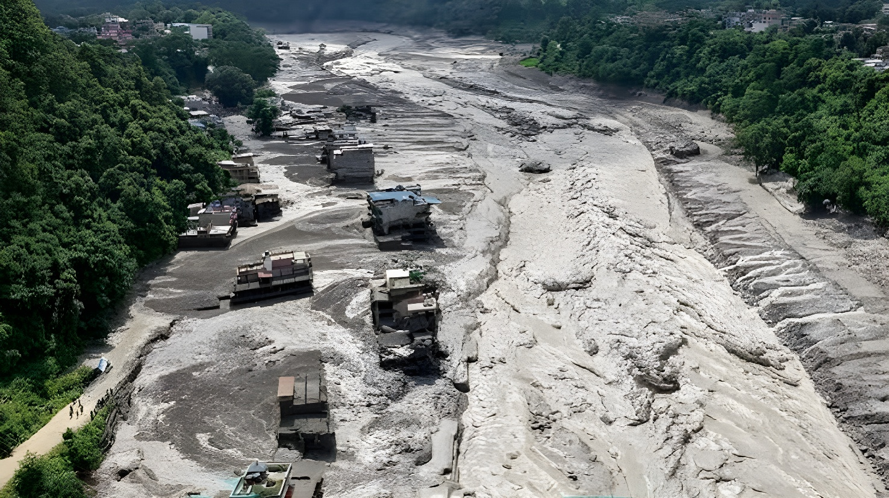

Le 26 août 2026, l'effondrement d'un pan de glacier à plus de 5 000 mètres d'altitude a déclenché une avalanche de glace et de roches, puis une crue torrentielle qui a rayé des villages entiers de la carte le long de la frontière entre le Népal et la région autonome chinoise du Tibet. Trois jours après la catastrophe, le bilan dépasse les 600 morts côté népalais et près de 2 500 personnes, dont de nombreux touristes étrangers, restent portées disparues.
Le mercredi 26 août 2026, vers 8h40 heure locale, une partie du front d'un glacier himalayen s'est détachée à environ 5 200 mètres d'altitude, côté tibétain de la frontière. La masse de glace et de roche a chuté de près de 1 200 mètres avant de s'écraser dans la rivière Lhende Khola, provoquant un signal sismique que l'USGS a d'abord pris pour un séisme de magnitude 4,4 avant de le requalifier en glissement de terrain de magnitude 5,2. L'embâcle formé par les débris a cédé quelques instants plus tard, libérant un mur d'eau, de boue et de rochers qui a dévalé la Bhote Koshi puis la Trishuli, dont le niveau a grimpé de 9 mètres en seulement trente minutes.
Les localités de Timure et Syaprubesi, dans le district népalais de Rasuwa, ont été les premières englouties, avant que la crue ne poursuive sa course vers les districts de Nuwakot et de Dhading. Des dizaines de camions, de véhicules et de bâtiments ont été emportés en quelques minutes. Plus de 5 000 militaires et policiers népalais ont été mobilisés, appuyés par des hélicoptères, des drones et des chiens de recherche, pour secourir les habitants et environ 350 ouvriers piégés dans un tunnel du chantier hydroélectrique d'Upper Trishuli-1.
Un pan de glacier s'effondre côté tibétain ; l'avalanche de glace et de roche déclenche une crue soudaine qui balaie Timure et Syaprubesi au Népal.
Un premier bilan fait état d'au moins 165 morts ; le département du Tourisme signale 668 touristes de 34 pays injoignables, la plupart partis en trek.
Le bilan national atteint 389 morts et plus de 1 300 disparus ; le Premier ministre chinois Li Qiang se rend sur la zone sinistrée au Tibet.
Le bilan grimpe à 579 morts selon l'autorité népalaise de gestion des catastrophes (NDRRMA) ; environ 2 500 personnes restent portées disparues des deux côtés de la frontière ; Paris confirme quatre Français disparus.
La police népalaise porte le bilan à plus de 600 morts ; les recherches se poursuivent dans les zones encore inaccessibles, tandis qu'un nouveau lac formé par l'effondrement fait l'objet d'une surveillance renforcée.
La région frontalière touchée est un haut lieu du trekking himalayen et du pèlerinage vers le mont Kailash et le lac Manasarovar, au Tibet, ce qui explique la présence de nombreux ressortissants étrangers au moment de la catastrophe. Selon les autorités népalaises, les disparus recensés au Népal comptent notamment 177 Indiens, 90 Américains, 34 Australiens, 33 Britanniques, 25 Canadiens et une centaine de Chinois, auxquels s'ajoutent quatre Français dont la disparition a été confirmée le 28 août par le Quai d'Orsay. Côté tibétain, la télévision d'État chinoise CCTV a fait état de 558 personnes portées disparues à Gyirong, dont 260 étrangers.
Sur place, les témoignages recueillis par la presse internationale décrivent des scènes de chaos. Un enseignant népalais a raconté à Al Jazeera avoir vu des véhicules emportés par les flots en quelques secondes à peine.
« J'ai vu environ neuf camions être emportés par les flots, avec des gens dedans. »
— Manoj Mishra, enseignant népalais témoin de la crue, cité par Al Jazeera, 27 août 2026Les scientifiques n'ont pas encore établi de lien direct et certain entre le réchauffement climatique et cet effondrement glaciaire précis, mais le contexte régional est sans équivoque : les glaciers de la chaîne de l'Hindu Kush-Himalaya, qui s'étend de l'Afghanistan à la Birmanie, ont perdu leur masse 65 % plus vite entre 2011 et 2020 que lors de la décennie précédente. Le Népal a lui perdu près d'un tiers du volume de ses glaciers en une trentaine d'années. Des images satellites ont révélé un enneigement anormalement faible et une exposition accrue de glace nue autour du glacier concerné avant son effondrement, un indice que les chercheurs continuent d'étudier.
| Épisode | Période | Bilan (morts) |
|---|---|---|
| Inondations / glissements | Sept. 2024 | ~245 |
| Glissements de terrain | Oct. 2025 | ~60+ |
| Séisme du Népal (référence) | Avril 2015 | ~8 900 |
| Cyclone Ditwah (Sri Lanka, référence régionale) | Nov. 2025 | ~646 |
| Crue glaciaire Népal-Tibet | Août 2026 | 600+ (bilan provisoire) |
Au-delà du bilan humain, déjà l'un des plus lourds de l'histoire récente du Népal, cette catastrophe illustre la vulnérabilité croissante des régions de haute montagne face au dérèglement climatique et l'interdépendance des pays qui partagent un même bassin versant : la crue de la Trishuli s'est prolongée jusqu'en Inde, où des milliers d'habitants du Bihar, de l'Uttar Pradesh et de l'Uttarakhand ont dû être évacués par précaution. Alors que les autorités népalaises et chinoises surveillent encore un nouveau lac formé par l'effondrement, la question de la prévention des risques glaciaires s'impose comme un enjeu majeur pour l'ensemble de la chaîne himalayenne dans les années à venir.